The Turtle Traders' Rule Dodged the COVID Crash. It Also Turned $1 into $8 Instead of $70.
It solves the exact problem my last two articles couldn't. Then it charges six percentage points a year for the privilege.
Both of the previous articles in this series ended on the same unresolved note. A trend filter that checks once a month cannot react to a crash that happens in three weeks. Dual Momentum was fully invested through the COVID crash and lost 33.5%. The 10-month moving average lost exactly the same. Both times I wrote that the fix is not a shorter monthly lookback but a faster, daily overlay — and that you would pay for it in whipsaw.
This article tests that claim, using the most famous daily trend rule ever written.
In 1983 Richard Dennis bet his partner that he could teach commodity trading to beginners. He recruited fourteen people, called them Turtles, and taught them Richard Donchian's channel breakout: buy when price makes a new 20-day high, sell when it makes a new 10-day low. The group reportedly made over $100 million. The rules were released free in 2003 and have been copied into retail trading content ever since.
Run on the S&P 500 from 1987 to 2026, it works exactly as advertised — and exactly as feared.
It cut the COVID crash from −33.5% to −9.2%, the 2018 selloff from −19% to −2%, and the 2025 tariff shock from −19% to −2%. No monthly rule in this series comes close. It is a genuinely superior crash responder.
It also turned $1 into $7.60, against $70 for doing nothing at all.
New to systematic trading? Terms like CAGR, Sharpe ratio, turnover and whipsaw are explained in plain language in the glossary — 64 definitions, no prior knowledge assumed. Dotted underlines link straight to the relevant entry.
The rule, exactly as backtested
Every trading day, using closing prices:
- If you are out of the market and today's close is above the highest close of the previous 20 trading days, buy equities.
- If you are in the market and today's close is below the lowest close of the previous 10 trading days, sell and hold bonds.
- Otherwise do nothing.
- Execute at the next day's close.
That is Turtle System 1. System 2 uses a 55-day entry and 20-day exit and is tested alongside it. The channels exclude the current day, so the comparison is always against prior history.
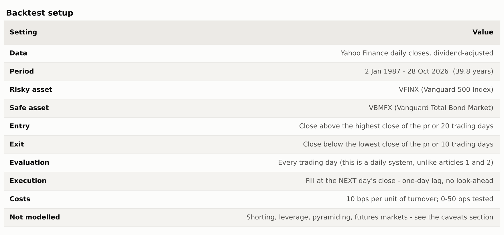
This is a long-or-flat equity version, and that is a meaningful simplification of what the Turtles actually did. They traded a diversified basket of futures, long and short, with leverage, volatility-based position sizing and pyramiding into winners. I test the sizing piece and the diversification piece separately below, and I return to what the simplification costs in the caveats.
Results
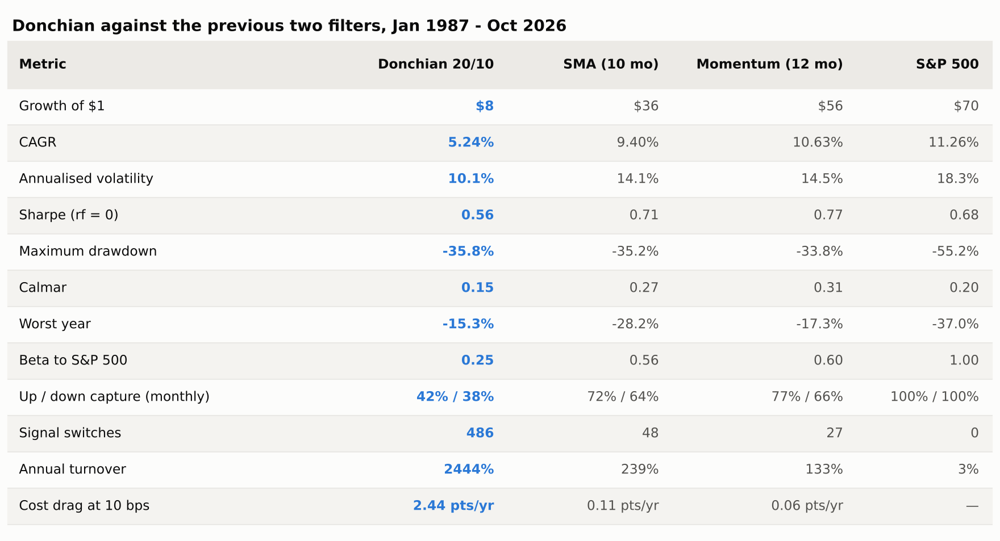
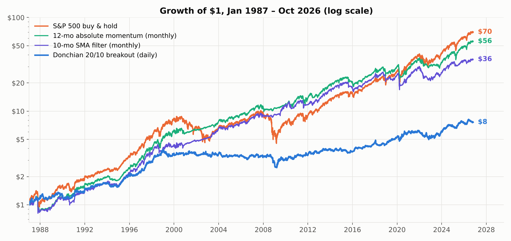
Before dismissing it, notice what the risk columns say. Volatility of 10.1% against the index's 18.3%. A beta of 0.25. Up-capture of 42% and down-capture of 38%. This is not a broken strategy — it is a low-risk, low-return asset that happens to be made out of the S&P 500. The Sharpe ratio of 0.56 is poor but not absurd.
The problem is that nobody wants a 5% return from an equity strategy that spends half its life in bonds, when 60/40 returned 8.8% with a better Sharpe and no trading at all.
What the daily exit actually buys
Here is the case for the defence, and it is stronger than the headline numbers suggest.
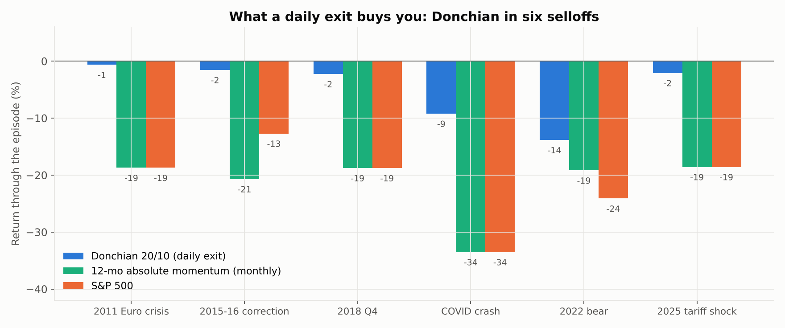
This is the chart I have been building towards for three articles. In the 2011 Euro crisis, the 2015–16 correction, Q4 2018, the COVID crash and the 2025 tariff shock, the monthly filters were fully invested and took the entire hit. Donchian was out within days each time.
The COVID column is the clearest: −9.2% against −33.5%. A rule that checks daily sees a crash that a rule checking monthly cannot. That is not a tuning difference, it is a structural one, and no amount of adjusting a monthly lookback will close it.
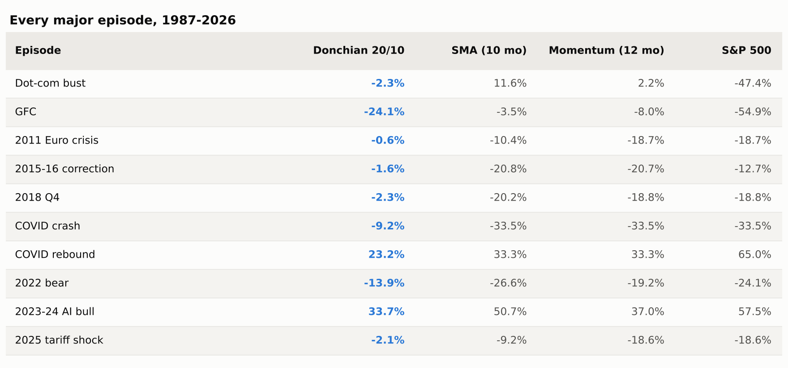
Look at the other side of the table, though. In the COVID rebound Donchian made 23% against the index's 65%. In the 2023–24 AI bull it made 34% against 57%. It is out of the market for the recoveries too, and the recoveries are where index returns come from.
Why it still loses: the signal predicts nothing
It would be easy to conclude that this is just the cost of insurance. It is worse than that. The breakout signal has no predictive content on this instrument at all.
Over 39.8 years the rule generated 243 entries. Here is what happened after each one, against the unconditional base rate:
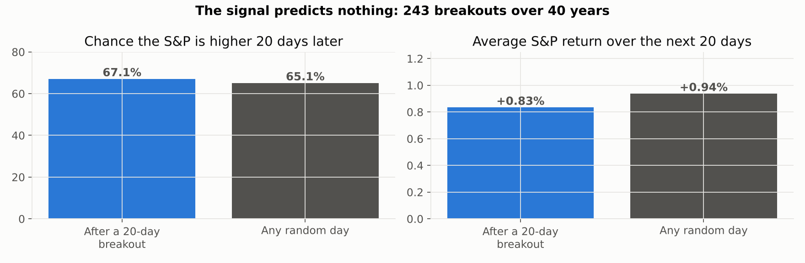
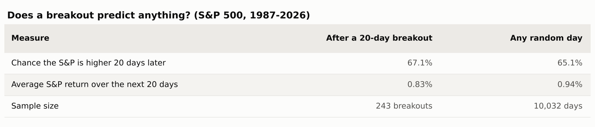
After a 20-day breakout, the S&P was higher 20 days later 67.1% of the time. On a randomly chosen day, it was higher 65.1% of the time. The two-point difference is noise on a sample of 243.
The average forward return is the damning one: +0.83% after a breakout, against +0.94% on an average day. Buying a new 20-day high did slightly worse than buying nothing in particular.
That makes sense once you say it plainly. An index with a strong upward drift is making new 20-day highs most of the time anyway. Filtering for that condition selects nothing useful — it just guarantees you buy after a run and sell after a dip, which on a mean-reverting-ish index is the wrong way round.
The cost problem
At 24 switches a year and a 21-day average holding period, this strategy lives or dies on execution costs.
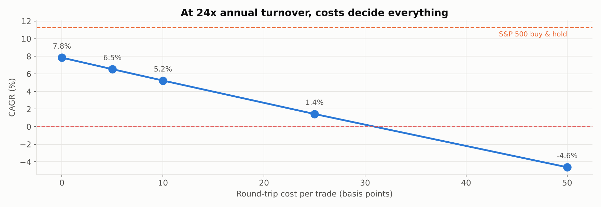
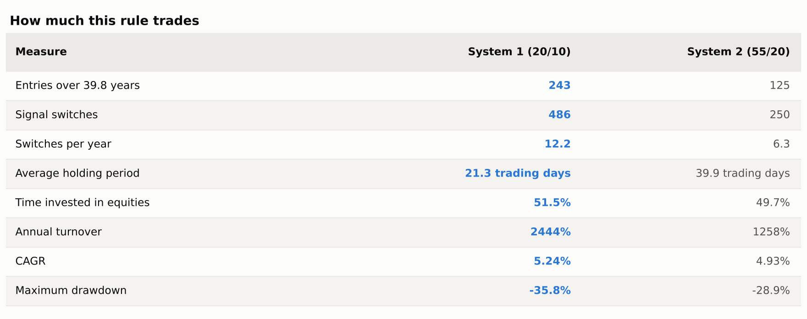
Even at zero cost it does not beat the index. But the 2.4 points a year that costs remove at a modest 10 bps is the difference between "underwhelming" and "actively bad", and at 50 bps the whole thing goes negative. For comparison, the monthly filters in articles 1 and 2 lose 0.06 and 0.11 points a year to the same assumption.
This is the real lesson about daily systems: they transfer the strategy's fate from the signal to the broker.
Robustness
1. Is 20/10 just the wrong setting?
This is the third article running in which the famous parameter turns out to be poor, so I tested the whole grid rather than assume.
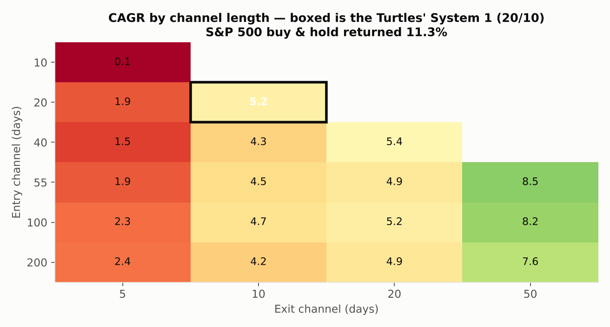
The pattern is clean: slower exits are better, and fast exits are catastrophic. A 5-day exit loses money at every entry length tested. The best cell in the grid, a 55-day entry with a 50-day exit, returns 8.52% — better than the famous 20/10's 5.24%, and still two and a half points below buy-and-hold.
So no, the parameters are not the problem. Nothing in the grid beats the index. And notice what the good cells have in common: a 50-day exit holds positions far longer, which makes the strategy less like a breakout system and more like the slow trend filters from the previous articles. The grid is telling you to stop doing this and go back to monthly.
2. Does volatility sizing rescue it?
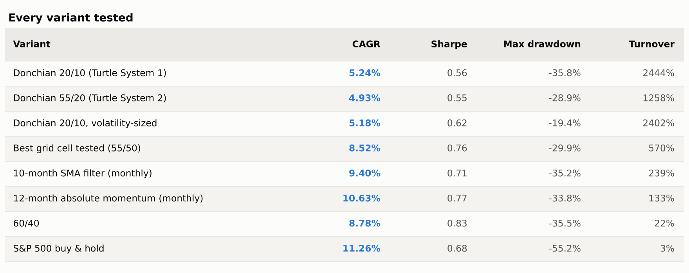
Volatility sizing — the Turtles' actual risk management, scaling position size so each trade contributes comparable risk — does something real but not what you would hope. Return is unchanged at 5.18%, but maximum drawdown drops from 35.8% to 19.4% and Sharpe improves from 0.56 to 0.63. It makes the strategy safer, not better.
3. Does diversification rescue it?
This is the strongest objection to everything above: the Turtles never traded one market. They ran the rule across dozens of uncorrelated futures, where a few large trends paid for many small losses. Testing it on the S&P 500 alone could be missing the entire point.
So I ran the same rule across six liquid ETFs — US equities, international equities, long Treasuries, gold, commodities and REITs — equal-weighted across whichever were trending on any given day, fully invested when any were.
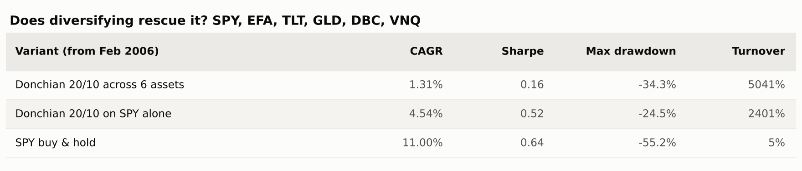
It got worse, not better: 1.31% a year against 4.54% for the single-asset version over the same window. Six assets each generating their own breakouts doubled turnover to 50 times a year, and the cost drag swallowed everything.
I do not think this settles the diversification question, and I want to be clear about why. My six ETFs are not the Turtles' portfolio. Futures carry far lower costs per unit of exposure than ETF round-trips, the Turtles used leverage to make small trend captures meaningful, they traded short as well as long, and twenty-plus genuinely uncorrelated markets is a different statistical object from six correlated ones. What this test shows is narrower: naive diversification across retail ETFs at retail costs does not rescue the rule. Whether a properly constructed futures programme still works is a question this backtest cannot answer, and I would not trust anyone who told you it could.
4. Before and after the rules went public
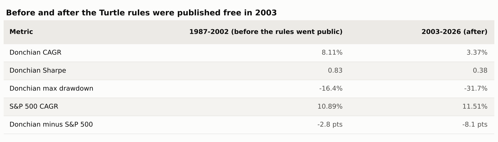
The original Turtle rules were published free in 2003. Before that, the strategy returned 8.11% a year with a Sharpe of 0.83 and a maximum drawdown of just 16.4% — a respectable risk-adjusted record, though still behind the index. After, it returned 3.37%.
Three for three now: every strategy in this series performed materially worse after it became widely known. I would not read that as the market arbitraging these rules away. The simpler explanation is that all three are trend filters, and the period since 2003 has had fewer of the slow grinding bear markets they are built for, plus two violent V-shaped recoveries that punish anything slow to re-enter.
5. Walk-forward
Re-choosing the entry channel each year from the best of the prior five years, then trading it out-of-sample, across 34 annual windows from 1992: the optimised version returned 4.63% a year against 4.74% for leaving the entry at 20 days, and 10.58% for the index. Optimising neither helped nor hurt — it just rearranged a losing hand.
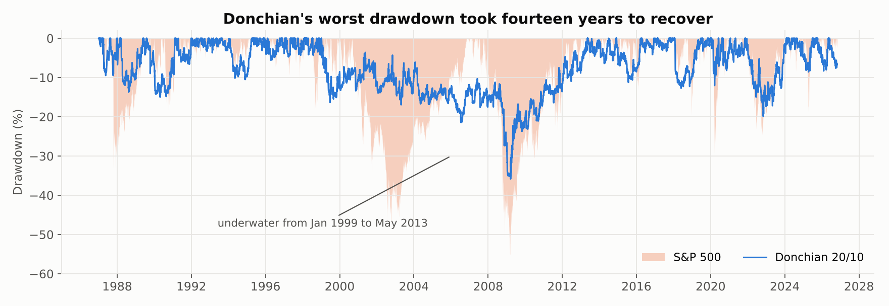
One last number deserves its own sentence. Donchian's deepest drawdown ran from January 1999 to March 2009 and did not recover until May 2013 — fourteen years underwater. Not because of any single crash, but because a chopping, mean-reverting market slowly bled it through hundreds of small round trips. No investor alive holds a strategy for fourteen years of that.
What I'd take from this
The daily exit is real and worth having. It is the only thing in three articles that handles a fast crash. If protection against another February 2020 is what you want, a monthly rule cannot give it to you at any parameter setting, and this can.
But breakout entry is the wrong way to get it. The entry signal adds nothing — new highs do not predict further gains on an index — while generating all of the turnover. The sensible shape is a slow entry and a fast exit: stay invested on a monthly trend test, but carry a daily stop that can act between month-ends. That is roughly what the 55/50 grid cell is groping towards, and it is the version I would actually test next.
Watch where the strategy's fate sits. At 24 turns a year, this rule's outcome is decided by execution costs rather than by any insight about markets. Any strategy with that property is fragile regardless of its backtest.
And treat famous parameters as folklore. Three articles, three cases where the widely copied number — 12-month lookback, 10-month average, 20/10 channel — sat at or below the middle of its own parameter range. These numbers propagate because a well-known source used them once, not because anyone keeps re-testing them.
Caveats worth stating plainly
This is a long-or-flat equity-index test of a rule designed for leveraged, long-and-short, diversified futures trading. The Turtles' results are not refuted by anything here, because I have not tested what they did. What I have tested is the version that circulates in retail trading content — the channel rule, applied to an index fund — and that version does not work.
Missing from this backtest: shorting, leverage, pyramiding, futures-level costs, and the twenty-plus market portfolio. Any of those could change the picture, and the first three would all raise risk as well as return.
The code
Same open-source harness as the rest of the series, now with daily rebalancing added to the engine. Each run writes a single JSON file with every metric, which is what these charts and tables were rendered from.
pip install -r requirements.txt
python run.py # regenerates every number above, ~5 minutes
python make_charts.py # regenerates every chartCode: github.com/AlgoStrategyLab/donchian-breakout — this strategy, with every output file committed. Engine: github.com/AlgoStrategyLab/strategylab-core — the shared harness, MIT licensed.
Next up: RSI(2) mean reversion — the opposite bet to everything tested so far, and the one that should do well in exactly the chopping markets that destroyed this one.
References. Faith, C. (2007), Way of the Turtle. Donchian, R. (1960), "High Finance in Copper", Financial Analysts Journal. The original Turtle rules were released publicly in 2003. Antonacci, G. (2014), Dual Momentum Investing. Faber, M. (2007), "A Quantitative Approach to Tactical Asset Allocation". Data: Yahoo Finance adjusted closes, retrieved 29 October 2026.
This is research and education, not investment advice. Backtests benefit from hindsight in instrument choice and start date, and past performance does not predict future results.